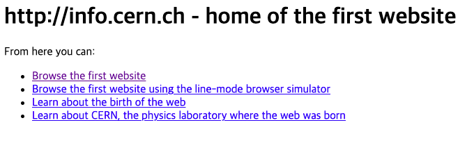

Back to Index
Self Directed Leaning:
Coding [2]
2021.03.27
WEB16-.
원시맵 -

16 원시맵 primitive WEB

1960년 인터넷 개발 / 1990년 웹이 개발 > 폭팔적 성장
World Wide Web 개발
17 인터넷을 여는 열쇠: 서버와 클라이언트
인터넷을 위한 컴퓨터 수 : 2대

18. 웹호스팅: github pages
GitHub 무료 웹서버 제공
오픈소스 제공 사이트
* 업로드 순서
Create a new repository
Upload files
drag files
commit changes
(first version)
: 식으로 나중에 버전 관리 가능
* web server 할당받기
settings > GitHub Pages >
https://yull13.github.io/web1/.
다른 웹 호스팅 사이트들도 많다.
생활코딩 유튜브 바로가기